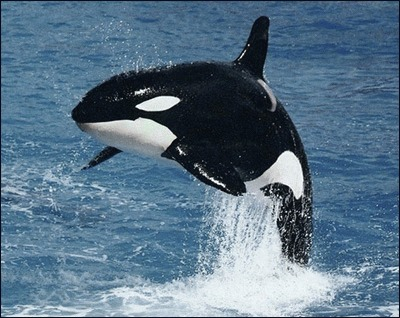

Balenele
Balenele sunt mamifere marine ce fac parte din subordinul Mysticeti al ordinului Cetacea. Balenele sunt totodata cele mai mari mamife din lume. Se vaneaza in general pentru carne, grasime, piele si fanoane.
Balenele au aparut acum aproximativ 50 de milioane de ani. Stramosii lor erau animale de uscat, care prin adaptarea treptata la mediul marin, au suferit pierderea perechii de picioare posterioare, crearea unei caudale, respectiv transformarea perechii de membre anterioare in inotatoare.
Balenele sunt animale blande, inteligente, care se hranesc cu microorganisemele din ocean. In ciuda dimensiunilor uriase, balenele nu consuma foarte multa hrana. Datorita conformatiei corporale menite sa economiseasca energia, ele nu au nevoie sa manance cantitati prea mari. Se hranesc cu mici organisme si plancton. Aceasta este cea mai bogata sursa de hrana pentru aceste mamifere marine.
Odata la 2-3 ani balenele nasc pui vii pe care ii hranesc cu lapte. In timpul nasterii, femela mama este inconjurata de cateva moase, care vor ajuta noul nascut sa se mentina la suprafata pentru a respira. Balena produce zilnic aproximativ 200-300 litri de lapte foarte gras. Puiul va suge lapte matern si are o rata de crestere foarte mare.

Exemple de balene pe cale de disparitie
- Balena albastra
- Balena cu cocoasa